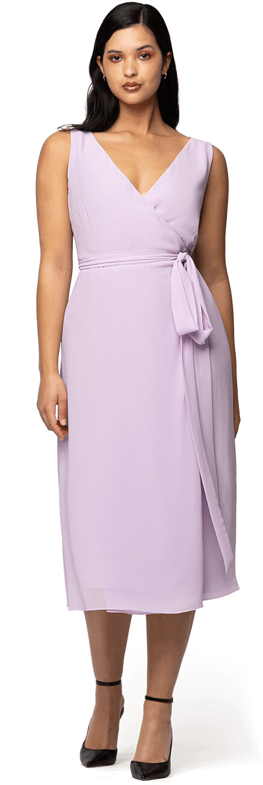
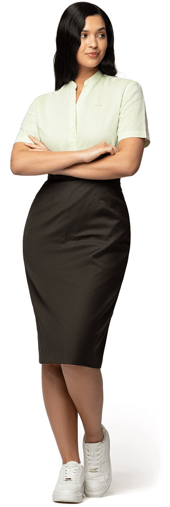

Tipos de Cuerpos Femeninos

Seguro que alguna vez te has preguntado: «¿qué tipo de cuerpo soy según mis medidas?» Lo que probablemente no sepas es que, con esta pregunta sobre los diferentes tipos de cuerpo mujer que existen, tu curiosidad habrá dado en el clavo. Porque, más allá de una simple peculiaridad estética, conocer tu morfología empodera. Saber identificar la categoría tipológica a la que perteneces te aportará beneficios a la hora de planificar tus rutinas de ejercicio físico y grandes ventajas cuando intentes encontrar la ropa que se acople perfectamente a ti. Además, saber cómo está moldeado y distribuido tu cuerpo hará que contactes con un realidad que, de tan evidente, a veces parece que se olvide: cada cuerpo de mujer es único y entender que existen muchas personas con un cuerpo parecido al tuyo ayuda a deshacer la hegemonía de los cuerpos normativos. La belleza anida en cada una de las siluetas principales con las que se identifican los cuerpos de mujer.
Tipos de Cuerpos de mujer y pequeños tips de moda
En función de las medidas de tu pecho, tu cintura y tus caderas (es decir, de cómo está distribuida tu estructura ósea y tu masa muscular) podrás determinar cuál de los diferentes tipos de cuerpo mujer es el tuyo. Los estudios científicos donde se cruzan patrones genéticos y datos antropológicos de la población convienen que, fundamentalmente, existen cuatro tipos troncales de cuerpos. Y en función de en cuál encajes, la elección de determinadas prendas puede potenciar tu carácter arrollador.
RELOJ DE ARENA
¿Qué es la figura de reloj de arena? Comprender tu tipo de cuerpo permite un enfoque más personalizado al vestir, lo que te permite resaltar tus mejores características con confianza y facilidad. Recuerda, cada forma es única y hermosa a su manera, e identificar la tuya es solo el comienzo de un viaje divertido y personal en la moda.
¿Qué es la figura de reloj de arena? Comprender tu tipo de cuerpo permite un enfoque más personalizado al vestir, lo que te permite resaltar tus mejores características con confianza y facilidad. Recuerda, cada forma es única y hermosa a su manera, e identificar la tuya es solo el comienzo de un viaje divertido y personal en la moda.
- Equilibrada y simétrica: La figura de reloj de arena se caracteriza por su silueta proporcionalmente equilibrada, donde la parte superior e inferior del cuerpo tienen aproximadamente el mismo ancho.
- Cintura bien definida: Esta forma se caracteriza por una cintura notablemente más estrecha en comparación con las caderas y el busto, creando una curva notable.
- Caderas y busto proporcionados: Las caderas y el busto suelen estar alineados en ancho, realzando la cintura distintiva y contribuyendo al equilibrio general.
- Reconocida por su equilibrio: Esta forma a menudo se reconoce por sus proporciones simétricas y equilibrio natural.
Los elementos esenciales para vestir una figura de reloj de arena
Vestir una figura de reloj de arena se trata de realzar y celebrar tus proporciones naturales mientras mantienes la comodidad y el estilo personal. Aquí tienes algunos elementos esenciales a tener en cuenta:
- Realza la cintura: La característica más distintiva de una figura de reloj de arena es la cintura estrecha. Enfatiza esta área con cinturones, faldas de talle alto y pantalones o vestidos que se ajusten en la sección media. La ropa a medida que llama la atención sobre tu cintura puede mejorar drásticamente tu silueta natural.
- Elige los tejidos adecuados: Opta por tejidos que caigan bien y se muevan con tu cuerpo. Materiales suaves y flexibles como el jersey, la seda y las mezclas de algodón se adaptan a tu forma y resaltan tus curvas sin agregar volumen. Evita los tejidos rígidos que podrían crear una forma cuadrada o poco favorecedora.
- Ropa interior soporte: Busca mantener el equilibrio natural de tu figura. Si llevas una parte superior ajustada, considera una parte inferior más fluida, y viceversa. Esto ayuda a mantener tus proporciones bajo control y tu silueta suave y estilizada.
- Ropa interior de soporte: La base de cada gran conjunto es la ropa interior adecuada. Invierte en sujetadores y prendas moldeadoras que ofrezcan soporte y suavicen tu silueta, asegurando que tu ropa se ajuste de manera hermosa y realce tu forma natural.
- Escotes y mangas: Los escotes en V, redondos y de corazón son favorecedores para las figuras de reloj de arena, llamando la atención sobre tu rostro y equilibrando tu busto. En cuanto a las mangas, prueba estilos cortos, con volantes o ajustados que no abrumen tu figura.
- Experimenta con capas: Si bien demasiadas capas pueden ocultar tu forma, una sola capa bien elegida, como un blazer ajustado o un cárdigan ligero, puede definir tu cintura y agregar sofisticación a tu look.
Cómo vestir una figura de reloj de arena: prendas y estilos
Cuando te vistes con una figura de reloj de arena, seleccionar prendas y estilos específicos que favorezcan tus curvas naturales es clave. Aquí tienes algunas sugerencias personalizadas para realzar tu silueta:
- Vestidos cruzados: La prenda por excelencia para las figuras de reloj de arena, los resaltan naturalmente tu cintura y se adaptan tanto a tu busto como a tus caderas de manera hermosa. Elige un estilo con un lazo o cinturón en la cintura para mayor definición
- Vestidos rectos: Vestidos rectos: son una gran adición al guardarropa de una figura de reloj de arena, con su ajuste estructurado que acentúa las curvas y las líneas de la cintura natural. Su dobladillo generalmente a la altura de la rodilla es favorecedor para equilibrar las proporciones y alargar las piernas. Considera combinarlo con un cinturón o un blazer para mayor definición.
- Vestido en línea A Un vestido en línea A que se ajusta en la parte superior y se ensancha suavemente desde la cintura puede ser una opción cómoda y elegante, perfecta tanto para ocasiones casuales como formales.
- Vaqueros acampanados o de corte recto: Si bien los vaqueros ajustados pueden funcionar bien, los vaqueros acampanados o ligeramente acampanados pueden ayudar a equilibrar tus caderas y crear una silueta más armoniosa. Las opciones de vaqueros de talle alto son particularmente favorecedoras.
- Blazers ajustados: Un blazer a medida que se ajuste en la cintura puede darle un toque elegante a cualquier conjunto y resaltar tu figura de reloj de arena. Opta por estilos con un solo botón de cierre justo en la parte más estrecha de tu cintura.
- Escotes al descubierto o cuellos barco: Estos escotes pueden equilibrar hermosamente tu parte superior del cuerpo, llamando la atención sobre tus hombros y cuello al tiempo que muestran tu cintura definida. Faldas acampanadas, con su cintura ajustada y dobladillo acampanado, acentúan la cintura estrecha de una figura de reloj de arena al tiempo que agregan equilibrio a las caderas, creando una silueta favorecedora para cualquier ocasión.
|  |  |  |
MANZANA
¿Qué es una forma de cuerpo de manzana?
La forma de cuerpo de manzana es distintiva y tiene varias características clave:
- Silueta redondeada: Esta forma de cuerpo a menudo se reconoce por una silueta más redondeada, especialmente alrededor de la sección media.
- Hombros anchos y busto más lleno: Las personas tienden a tener hombros más anchos y un busto más lleno en comparación con sus caderas.
- Cintura menos definida: La cintura suele ser menos definida, con la redondez centrada principalmente alrededor del abdomen.
- Brazos y piernas más delgados: A pesar de la sección media más llena, los brazos y las piernas tienden a ser más delgados, creando una distribución única de curvas.
- Comprender tu forma: Reconocer que tienes una forma de cuerpo de manzana es crucial por varias razones:
- Influye en las elecciones de ropa: Conocer tu forma de cuerpo influye en tus elecciones de ropa y estrategias de estilo, ayudándote a seleccionar prendas que favorezcan tu figura.
- Equilibra las proporciones: Al identificar este tipo de cuerpo, puedes elegir conjuntos que armonicen y equilibren tus proporciones, realzando tu estructura natural